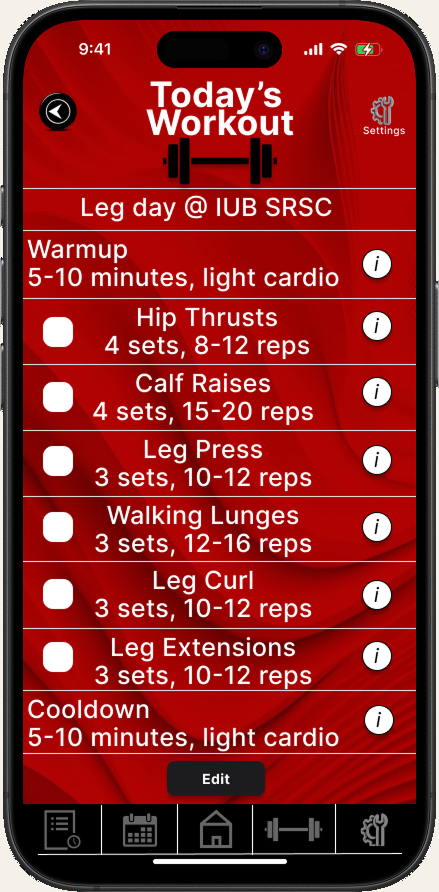
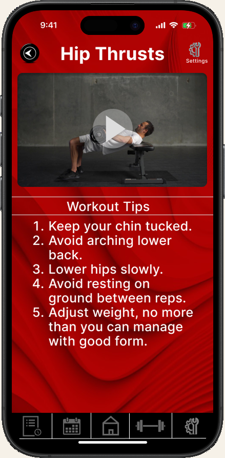
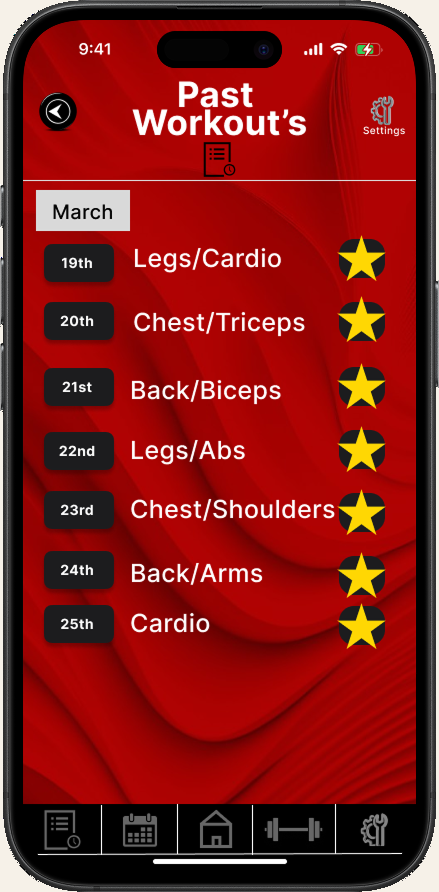
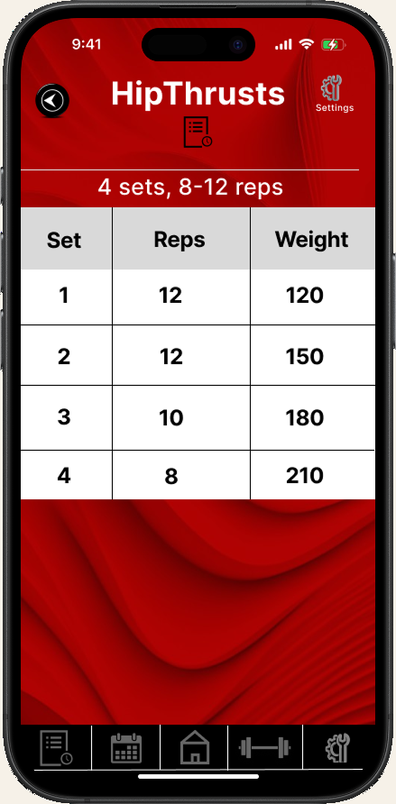
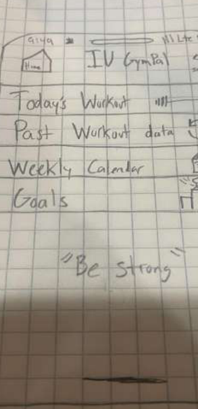
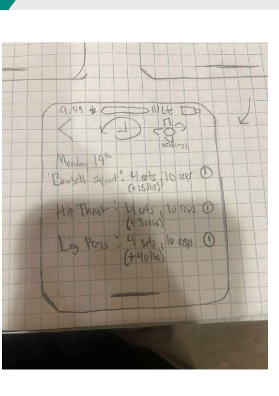

IU students already have gyms, dining halls, and fitness goals. Most of them work out some weeks. They do not need another lecture about health.


Generic trackers do not know SRSC or a midterm week. Logging feels like homework. The floor is intimidating if you do not already know the machines.
A campus companion: today’s plan, a form check without shame, and a history that shows what you did — not a form you have to fill in first.
The problem
How do you help IU students keep track of exercise — and, if they want it, food — without dumping them into one more overloaded health app? That was the brief for I300 Group 5: Emanuel Delgado, Zach Loucks, Burk Shelley, and me.
Secondary research was blunt. People are drowning in fitness apps. Students pick them for ease of use and trust, not for a feature list. The ones that stick use goals, feedback, and a little social proof — not a blank log.
We started even broader: a diet tracker tied to IU dining, a calorie day-total, a strength log. Interviews pulled us in. Most students were not diet-tracking at all. They kept a mental note, or the Notes app. What they wanted was a plan for today, and not to type their life in before they could lift.
What students actually said
I interviewed IU students alongside the team — more than twenty in total — about gyms, food, and whatever they already used. The affinity map kept returning to the same pile: goals exist, dedicated apps mostly do not, and recommendations come from TikTok or a roommate, not the App Store charts.
-
01
Do not make them enter everything.
People who do not already live in MyFitnessPal will not start. If the first screen is a form, they leave. Automation and a short path beat a complete profile.
-
02
Give them today, not a dashboard.
They asked for a workout for this day, and — if we went there — what to eat and where on campus to get it. Preferences and goals, yes. A social feed, no.
-
03
Notes is the competitor.
Most did not have a fitness app. They scribbled muscle groups in Notes and could not tell, at the end of the day, whether it added up. That is the job: make the log useful without making it a second job.
“I would not like it if I have to put all the information.”
“I’d expect to see a workout plan for each day and exactly what to eat and where to go to get it.”
“I track my exercise because it lets me know which day I did what… it keeps me encouraged.”
Who it had to serve
Two people kept us honest. Karina already works out almost every day and writes it down. She will not open a new app unless a friend or TikTok vouches for it, and she cannot turn her notes into anything like progress. Henry cares about feeling good and is not dedicated to a daily split. Dining halls do the cooking. A tracker that nags him about macros is a delete.
We also named four product ideas: GymPal, NutriPal, IU Fitness, IU Fresh. GymPal won because equipment, form, and progressive overload were the actual gap — not another meal plan for people who were not tracking meals.
-
20 · business · IU
Karina
Exercises almost daily. Tracks muscle groups in Notes, not diet. Wants to see what she did without fighting a form. Only tries apps friends or TikTok praise.
-
19 · psychology · IU
Henry
Not on a program. Does not stick with health apps. Needs to see completed work and a tutorial more than a calorie budget. The dining hall is already decided.
What I owned
The app split four ways. Burk took today’s workout. Emanuel took the weekly calendar. Zach took settings — campus, devices, profile. I took past workout data: the list of days, the drill-down into a session, the set / rep / weight table, and a way to open form help from history so Henry could see what he had already done without pretending he already knew the lift.
I also sat in the interviews and sketched the home-to-history flow on paper before we had a UI kit — stars for a finished day, a highlighted tap target on the date, less empty space. The hi-fi screens are the team’s. The history path is the part I kept pulling back to the notes.
The product
Sign in with IU login if you can. Home is not a feed. It is three doors — today’s workout, past data, weekly calendar — and a streak card so Karina’s “it keeps me encouraged” has somewhere to live. The AI layer is a planner: preferences in, a split out. It does not occupy the screen as a chatbot.


Today’s workout
A named session at a named gym: Hip Thrusts, calf raises, the rest of a leg day at the SRSC. Each row has sets and reps. An info control opens the tutorial. The campus part is the point. A generic “leg day” could live in any app. “Leg day @ IUB SRSC” is why a student would open this instead of Notes.
Form without shame
Hip thrust, play button, five cues: chin tucked, don’t arch, lower slowly. We treated tutorials as a support surface, not a course. If you don’t know the movement, you should not have to leave the workout to YouTube and lose the set.


Past workout data
March, a date, a split, stars. Tap the day and you get the session at the SRSC. Tap the lift and you get the table: 12×120, 12×150, 10×180, 8×210. That is the page I owned. It is also the page testers could not find when the date was only a dark chip with no arrow. We had to make the target obvious after we watched people miss it.
Calendar and settings
The week is a list of dates and body parts, with an edit path after heuristic evaluation showed you could not change what you wanted to train. Settings hold campus, devices, and accessibility — including a campus switch so the same student can be at Bloomington or Indy without a second account.
Design decisions
-
01
Campus in the copy, not a footer.
SRSC and BGF in the workout name. IU login on the first screen. A campus picker in settings. If you can swap the logo and it still works, it is not a campus app.
-
02
History as the product for Karina.
She already writes the work down. The job is inference: which day, which group, did the weight go up. Stars and a set table are that inference. A social graph is not.
-
03
Form is a support surface.
Henry will skip a lift he does not know. A video and five cues on the exercise page is cheaper than a “beginner program” he will not open.
-
04
Stop using toggles for things that are not on/off.
Testing made this unavoidable. Completing a set, picking an age, picking a campus — testers treated those as mystery switches. Checkboxes and single-select replaced them in the final pass.
How the plan changed
Paper first. My 1.0 sketches were a different home. 2.0 adopted the shared GymPal layout, then I drew the path into past data: a finished day marked, the date as the tap, a session list with weight jumps, a form box for the squat. Heuristic evaluation said you still could not customize which body part to train — so the calendar got an edit control.
An outside critique of the early hi-fi was fair: it still looked like a wireframe, too much text, no fixed bottom navigation, red used as a button color, leftover white space. We added the tab bar, leaned on icons, and kept IU crimson as atmosphere instead of as every control.
Four usability sessions on prototype 3.5. People liked the purpose and called it clean. They still failed the tasks that lived on my screens and the complete-workout control: they could not tell the date chip was a button, and the toggle for “done” did not read as done. Version 4.0 added a checkbox for complete, a white arrow on the date, and selection instead of toggles for age, weight, and campus.


-
Research
Listen
Secondary sources plus 20+ student interviews. Notes beat MyFitnessPal. Nobody asked for more fields.
-
Frame
Choose
Karina and Henry. GymPal over a dining-hall meal planner. Four screens, four owners.
-
Build
Raise fidelity
Paper, wireframes, heuristic pass, then a hi-fi that still looked like boxes until we added a tab bar.
-
Test
Fix the tap
Four sessions. Date chips and toggles failed. Checkboxes, arrows, single-select in 4.0.
What we made
A hi-fi mobile prototype: IU sign-in, a home that leads with today, a campus-named workout, form tips, a history with real numbers, a week view, and settings that know there is more than one IU campus. There is no live store listing — the Figma file is what we shipped for class.
- Team
- 4 people, I300 Group 5
- Research
- 20+ student interviews
- Test
- 4 sessions, then a 4.0 pass
- Output
- Hi-fi iOS prototype
What I learned
Looking at this with a colder eye: the home list and the bottom navigation still repeat each other, icon weights don’t match, and the motivational panel fights the content for contrast. Those are real notes, and I would fix them before calling this production-ready. The research insight still holds — students need a campus-specific on-ramp, not another generic tracker.
Testing was the other lesson. I had highlighted the date on paper and still shipped a chip people did not recognize as a button. Watching four people miss the same control is more persuasive than another critique slide. If I continued the work, I would timed-task the history path first, then quiet the home so today’s workout is the only primary action.